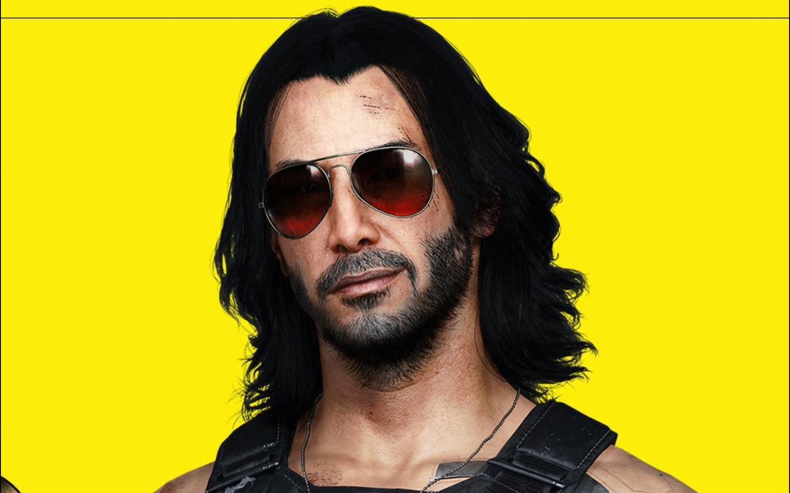
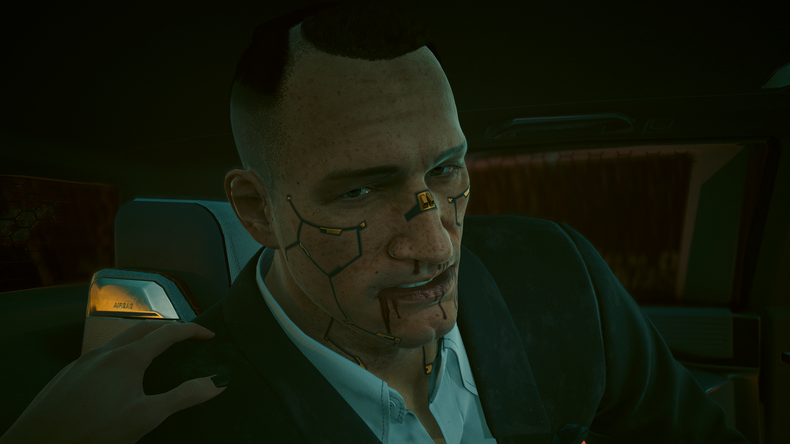
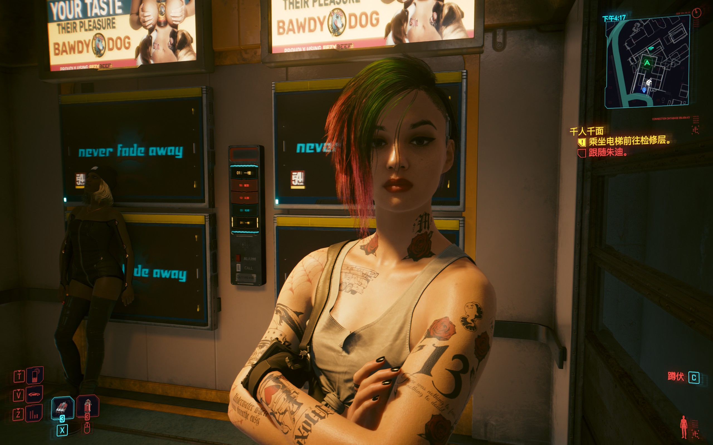

开放世界动作冒险RPG，由CD Projekt RED开发。基于迈克·庞德史密斯的经典桌游《赛博朋克2020》世界观。

扮演V——一名在夜之城崭露头角的雇佣兵。在一次看似普通的委托中，你卷入荒坂公司的巨大阴谋。名为"圣物"（Relic）的生物芯片承载着已故传奇摇滚巨星强尼·银手（基努·里维斯 饰）的数字意识。
芯片纳米技术正在覆盖你的神经元——意识被强尼取代。只有几周时间找到分离两人的方法。你的每个决定都影响故事走向和最终结局，游戏共有多个不同结局。
选择V的出身背景。不同出身带来独特的对话选项、序章体验和NPC态度。虽不改变主线结局，但每条路都让夜之城向你展示不同面貌。
来自夜之城外的荒原（Badlands）。作为流浪者家族一员，熟知引擎的每一声轰鸣。在废土生存的法则和对自由的渴望把你带到夜之城，但城市的高墙远比沙漠更加残酷。与荒原居民打交道有独特优势，且精通车辆驾驶。
从小混迹于夜之城街头，熟悉每一条暗巷的规则。了解帮派运作方式，知道哪个街区属于谁。与街头人物的天然默契让你在黑市交易和帮派周旋中如鱼得水。你是这座城市真正的"本地人"。
曾是荒坂反情报部门的一员，精通谈判、威胁与操控。在一场内斗被剥夺一切后从摩天大楼跌落到街头，但在企业界的知识与高层人脉仍是你最强大的武器。你知道权力游戏的规则——因为你曾是玩家。
属性点决定你能装备的义体和使用的技能。属性点只能重置一次，投入前请三思。技能点则可以随时免费重置。
生命值、耐力、近战伤害。使用霰弹枪、轻机枪和大猩猩手臂的基础。影响力量对话选项。
移动速度、暴击率、闪避。使用步枪、手枪和武士刀的基礎。冲刺与空中闪避的核心属性。
护甲值、科技武器伤害、义体容量上限。解锁高级义体和武器升级选项。开门破锁的关键属性。
快速破解伤害、RAM上限。使用智能武器和黑客技能的核心属性。影响网络对话与信息收集。
暴击伤害、潜行效果、敌人侦测距离。使用手枪和狙击步枪的辅助属性。冷静对话选项的基础。
通过义体医生（Ripperdoc）安装赛博义体是游戏的核心系统。以下是改变游戏体验的关键义体。
操作系统义体。激活后进入子弹时间，周围敌人动作大幅放慢。反应武士流派的核心，让你在战场上化身不可触及的幽灵。
手臂义体。大幅提升近战伤害，拳击任务只需几拳即可解决。提供+6肉体加成用于属性检定，轻松通过任何力量门槛。
腿部义体。获得二段跳能力——彻底改变探索与战斗的方式。配合冲刺技能实现空中冲刺，抵达原本无法到达的位置。
手臂义体。从手臂弹出两把致命利刃，可蓄力冲刺攻击远处的敌人。攻速快、伤害高，是近战流派的另一选择。
手部义体。使智能武器的子弹可以自动追踪目标。配合智能冲锋枪或智能手枪，中距离战斗中几乎无需手动瞄准。
表皮义体。激活后可短暂隐身，脱离战斗或完成潜行暗杀。潜行枪手流派的核心装备，让你成为真正的幽灵杀手。
在夜之城的旅途中，V并非孤身一人。这些角色将在你的故事中留下不可磨灭的印记。

V在夜之城最亲密的伙伴和兄弟。一个心怀梦想、体格魁梧的前瓦伦蒂诺帮成员。他有着一颗金子般的心，梦想着成为来生酒吧的传奇人物。在"大抢劫"任务中，他与V并肩作战，但命运给这段友情画上了残酷的句号。
杰克的离去是V故事中最深刻的伤痛之一。他留给V的不仅是一段未完的传奇梦，更是支撑V继续前行的力量。来生酒吧里以他命名的酒——"杰克·威尔斯"——是对这位战士最好的纪念。
夜之城最顶尖的超梦（Braindance）编辑师之一，莫克斯帮（The Mox）的成员。她是一名理想主义者，渴望用超梦技术改变世界，却在一次次失望中被这座城市磨平了棱角。
朱迪是V可以发展深厚关系的角色之一。她的故事线涉及爱情、背叛、复仇与自我救赎。无论你选择什么样的V，朱迪都会是你在夜之城最重要的一段羁绊。
